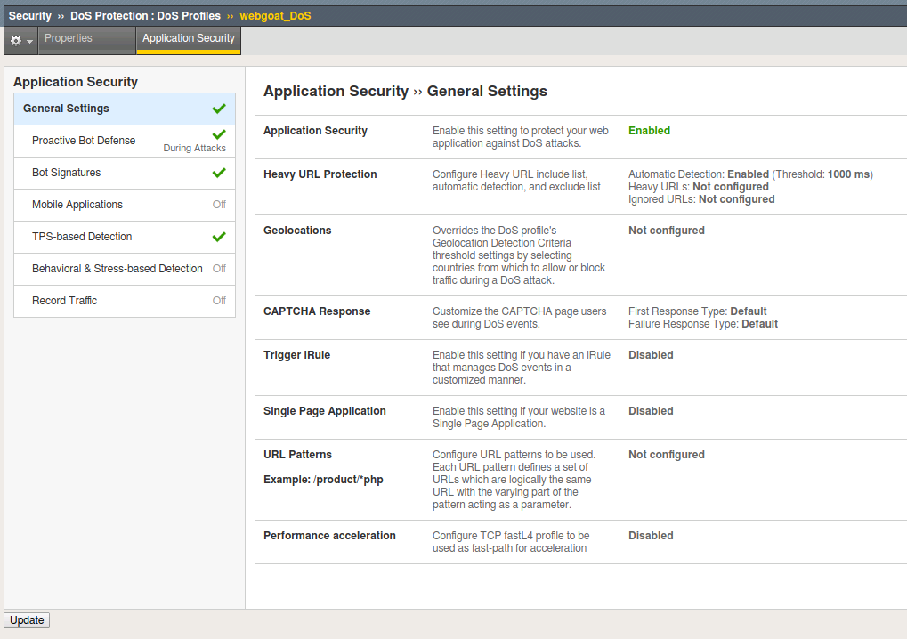
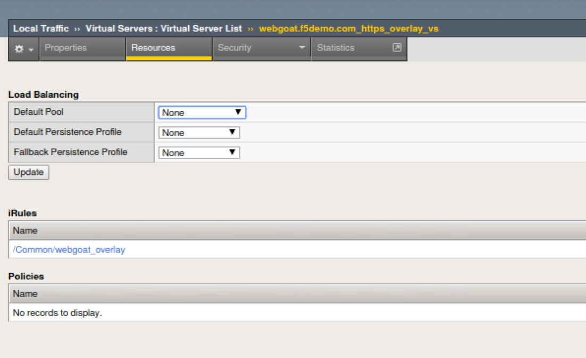
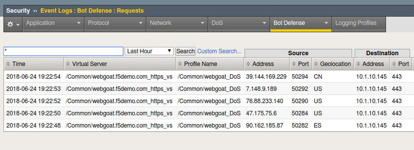
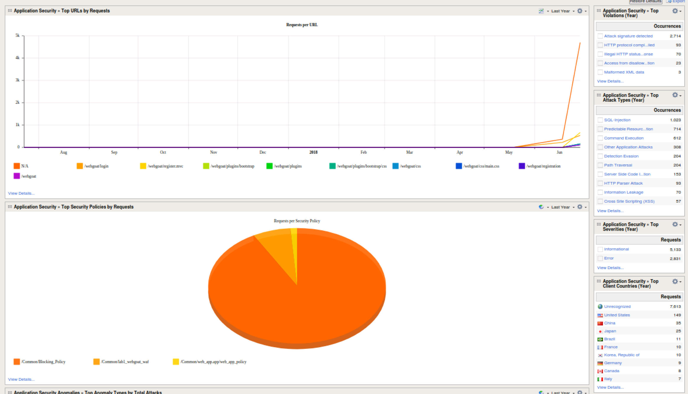
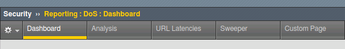
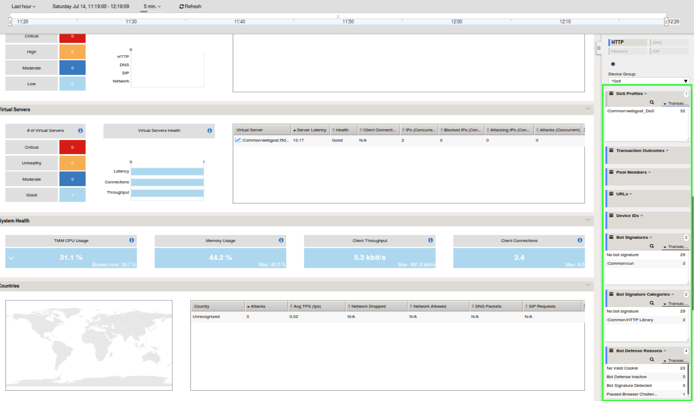
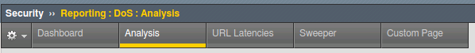

BOT Signatures
Navigate to Security > DoS Protection > DoS Profiles
Click on the webgoat_DoS profile and then the
Application Security tab to configure the policy.
Select Proactive Bot Defense under the list of Application
Security options.
In the Application Security > Proactive Bot Defense
section, click the Edit link for Operation Mode and
then change the setting from Always to During Attack and
click Update to complete the policy change.

Run cURL again: curl https://webgoat.f5demo.com/WebGoat/login -k -v | more
Note
The site should respond normally now every time because we are not “under attack” ASM uses TPS based detection (client-side) and Behavioral Stress detection (server-side) to determine when the system is under attack. Without the Advanced WAF license, Behavioral DoS Detection is limited to two virtual servers.
cURL is considered an HTTP Library tool and falls in the Benign Category.
Important
Just how benign are HTTP library tools? cURL can easily be
scripted in a variety of ways and can be used as a downloader to siphon
off data. Remember the famous media defined “hacking tool” that Snowden
used? wget? There are many use-cases where you simply do not want a tool
interacting with your site.
cURL from Different Geolocations
Note
We are going to leverage an overlay virtual server to randomize source IP addresses similar to the earlier lab concept of randomizing XFF.
1. Open Local Traffic > Virtual Servers and click on webgoat.f5demo.com_https_overlay_vs.
Go to the Resources horizontal tab and verify that the iRule webgoat_overlay is applied. Freel free to check out the code in the iRule. This code and BIG-IP flexibility makes lab testing and simulations a breeze.

- Modify the cURL command to point at the overlay virtual server and run several times:
curl https://10.1.10.146/WebGoat/login -k -v | more
- Review the event logs at Event Logs > Bot Defense You will
now see geo-data for the BOT connection attempts.

- Navigate to Security > Overview > Application > Traffic and review the default
report elements. You can change the widget time frames to see more historical data.
- Click Overview > Application > Traffic and override the timeframe to past year:

- Take some time reviewing this screen and practice adding a new widget
to see additional reporting elements:
- Click the DoS tab at the top. In some time…The DOS Visibility Screen loads.

Note
You may need to change your time in the system tray for accurate results.
Although there have not been any L7 DoS attacks some of the widgets along the right contain statistics from the BOT mitigations.
Change the time window (top left) from 5 minutes to “All Time” so see more data.

- Click the Analysis tab at the top and review the graphs available to you.

- Click the Custom Page tab at the top and review the graphs available to you.
Please feel free to add widgets and/or explore the ASM interface further.
This concludes the BOT Protection section of this lab guide!
{kind=link}
{kind=link}
{kind=link}
{kind=link}
{kind=link}
{kind=link}
{kind=link}
{kind=link}
{kind=link}
{kind=link}
{kind=link}
{kind=link}
{kind=link}
{kind=link}
{kind=link}
{kind=link}
{kind=link}
{kind=link}
{kind=link}
{kind=link}
{kind=link}
{kind=link}
{kind=link}
{kind=link}
{kind=link}
{kind=link}
{kind=link}
{kind=link}
{kind=link}